🫁 呼吸系統
💡
組織部分有些補充自FC
呼吸器官
- 上呼吸道(upper respiratory tract)：鼻(nose)、咽(pharynx)、喉(larynx)
- 下呼吸道(lower respiratory tract)：氣管(trachea)、支氣管(bronchus)、肺(lung)
鼻(nose)
鼻腔(nasal cavity)-基本構造
- 底(floor)：腭=上腭(palatine)
- 軟腭(後1/3)：含懸雍垂(uvula)
- 硬腭(前2/3)：上頷骨(前3/4)+腭骨水平板(後1/4)
- 側壁：篩骨+腭骨鉛直板十額骨/蝶骨/鼻骨/淚骨/上頷骨/下鼻甲等
- 鼻中膈(nasal septum)
- 軟骨：中膈軟骨
- 硬骨：篩骨垂直板+犁骨(=鋤骨,vomer)
- 頂(roof)：篩骨水平板(具嗅神經孔；嗅N通過)十額骨/蝶骨/鼻骨等
鼻腔-左右鼻腔各分三區
- 前庭區(vestibule)：入口處，具角質化複層鱗狀上皮&皮脂腺
- 呼吸區(respiratory segment)：佔最大部份(約2/3)，具偽複層柱狀上皮[呼吸道的特色]
- 纖毛細胞(ciliated cell)：具纖毛的高柱狀細胞，自黏液表面伸出並覆蓋著上皮表面
- ★[107-2]杯狀細胞(goblet cell)：負責製造&分泌黏液
- 刷狀細胞(brush cell)：具有微絨毛
- 小顆粒細胞(small granule cell=kulchitsky cell)：有分泌顆粒
- 基底細胞(basal cell)：幹細胞
- ★[107-2]嗅覺區(olfactory segment)：最上方(上鼻甲之上方)，含：
- 嗅覺黏膜(olfactory mucosa)：偽複層柱狀上皮
- 嗅細胞(olfactory cell)：司嗅覺，具纖毛，屬於雙極神經元
- 支持細胞(subtentacular cell)：支持嗅細胞，數目最多，具微絨毛
- 基底細胞(basal cell)：幹細胞
- 刷細胞(brush cell)：接受一般感覺，經CN5-1, 5-2傳至中樞，具微絨毛
- 黏膜固有層(lamina propria)：具大量血管、淋巴管、神經纖維、嗅腺(Bowman's gland)
- 嗅腺(Bowman's gland)：分泌漿液(pure serous gland)
- 助分子溶入以刺激嗅細胞
- 清洗纖毛利於接受新氣味
- 嗅腺(Bowman's gland)：分泌漿液(pure serous gland)
- 嗅覺黏膜(olfactory mucosa)：偽複層柱狀上皮
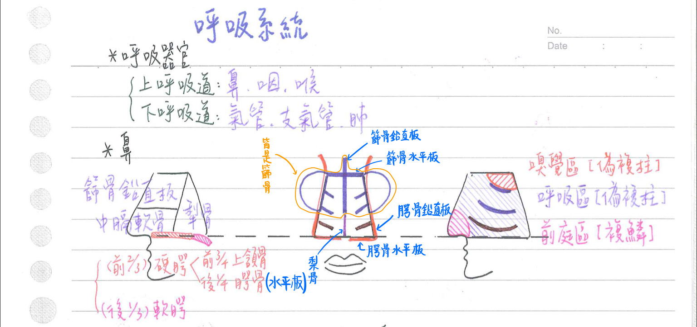
★危險三角：顱外(extracranial)與顱內(intracranial)靜脈互通區
- 位置：兩側鼻翼與上唇間
- 此處靜脈(上唇、外鼻、眼角V)★[107-2]經顏面V與顱內V相通
- 上唇V、外鼻V、眼角V→顏面V→
- ★[107-2]上眼V→海綿竇(cavernous sinus)
- 下眼V、下眼眶V、深面V→翼靜脈叢(pterygoid plexus of veins)→密使V(emissary v.)→海绵竇(cavernous sinus)
- 上唇V、外鼻V、眼角V→顏面V→
- ★頭頸部靜脈無瓣膜→一旦感染易造成顱內靜脈竇炎
鼻-血管支配
- 內頸A→眼A→前、後篩A：鼻腔前、後上部
- 外頸A→上頷A→蝶腭A：鼻腔後下部
- 外頸A→顏面A→上唇A：鼻腔前庭區
- 前篩A、蝶腭A&上唇A於前庭區(中膈面)吻合→為最易鼻出血處
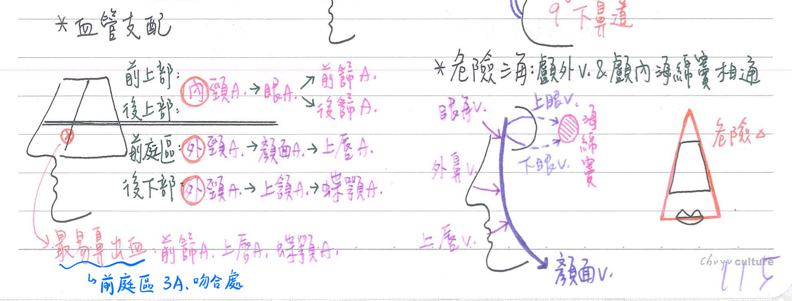
鼻-神經支配
- 三叉神經眼枝(CN5-1)：鼻睫N→前篩N：鼻腔前半部一般感覺
- 三叉神經上頷枝(CN5-2)：後鼻N、鼻腭N：鼻腔後半部一般感覺
- 嗅神經(CN1)：嗅覺(嗅覺區)
鼻甲與鼻道
- 鼻甲(concha)：
- 上鼻甲、中鼻甲：為篩骨之一部份
- 下鼻甲：為獨立的一對骨頭，不屬於篩骨的一部份
- 鼻道(meatus)：
- 最上鼻道(=蝶篩隱窩)：上鼻甲之上方，具★[108-1]蝶竇之開口
- 上鼻道：上鼻甲之下方，具篩後竇之開口
- 中鼻道：中鼻甲之下方；由前上方至後下方具：
- 漏斗(infundibulum)：具篩前竇、額竇之開口
- 篩泡(bulla ethmoidalis)：具篩中竇之開口
- ★★[108-1]半月裂(hiatus semilunaris)：具上頷竇之開口
- 下鼻道：下鼻甲之下方，[重要]具鼻淚管(nasolacrimal duct)之開口
[重要]鼻-副鼻竇(paranasal sinus)
💡
蝶竇→最上鼻道
篩後竇→上鼻道
others→中鼻道
- 四對：
- 上頷竇(maxillary sinus)：體積最大；上臨眼眶底
- 鼻咽癌好犯處
- 因開口位於腔竇之上方，最易因引流不全而感染發炎
- 額竇(frontal sinus)：最晚發育完成(約7,8歲)
- 篩竇(ethmoid sinus)：具篩前竇、篩中竇、篩後竇
- 蝶竇(sphenoid sinus)：左右緊鄰；不對稱；上臨腦下腺、視神經交叉；旁臨海綿竇
※海綿竇：內含內頸V、CN6
- 上頷竇(maxillary sinus)：體積最大；上臨眼眶底
- 功能：
- 內含空氣，減輕頭骨重量(最重要功能)
- 造成聲音共鳴→輔助發聲
- 副鼻實內襯黏膜，可分泌黏液，注入鼻腔
- 眼眶骨折：眼下直肌易掉入上頷竇→產生複視
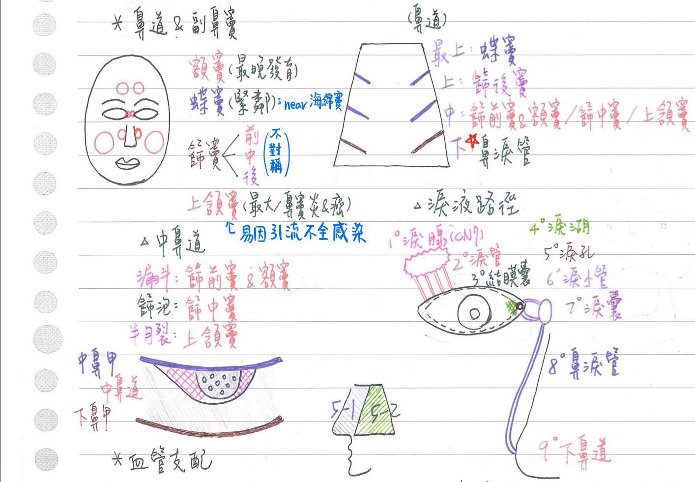
淚腺(lacrimal gland)& 淚液路徑
- 淚腺：位於眼眶外上方；由顏面N(CN7)支配
- 淚腺：以提上眼瞼肌分為：眼眶部(上方，較大)&眼瞼部(下方，較小)
- 淚液路徑：淚腺→淚管(lacrimal duct)→結膜囊(穹窿)[conjunctivval sac(fornix)]
→淚湖(lake)→淚孔(punctum)→淚小管(canaliculi)
→淚囊(sac)→鼻淚管(nasolacrimal duct)→下鼻道(inf. meatus)；經咽、食道吞入胃
鼻-功能
- 溫暖、濕潤、潔淨空氣
- 嗅覺
- 輔助發聲
咽(pharynx)：分成三部份
- 咽共有7個開口(鼻咽x4、口咽x1、喉咽x2)
- 鼻咽：後鼻孔x2 + 耳咽管 x2
- 喉咽：喉(呼吸道)+食道
- 口咽、喉咽：為呼吸道&消化道之共同通道
鼻咽(nasopharynx)
- 位於顎之上方：由CN5-2支配；具偽複層柱狀上皮
- 後壁含咽扁桃體，即腺增殖體(adenoid)→東方人咽扁桃體較大
- 前壁具二個後鼻孔(為鼻腔與鼻咽之交界)
- 側壁具二個耳咽管(auditory tube)之開口
- 耳咽管=歐氏管(Eustachin tube)：
- 連接中耳前壁與鼻咽壁
- 具平衡中耳與外界氣壓之功能
- 為中耳之感染途徑(咽喉炎→中耳炎)
- 腭帆張肌 & 腭帆提肌：當吞嚥時，會使耳咽管開啟
- 耳咽管=歐氏管(Eustachin tube)：
口咽(oropharynx)
- 位於腭與舌骨之間；由CN9支配；具複層鳞狀上皮
- 前方具一個咽門(為口腔與口咽之交界)
- 含腭扁桃體(腭舌弓與腭咽弓間) & 舌扁桃體(舌根)
喉咽(laryngopharynx)
- 位於舌骨之下方；由CN10支配；具複層鱗狀上皮
- 前下接喉(呼吸道)
- 後下接食道(消化道)
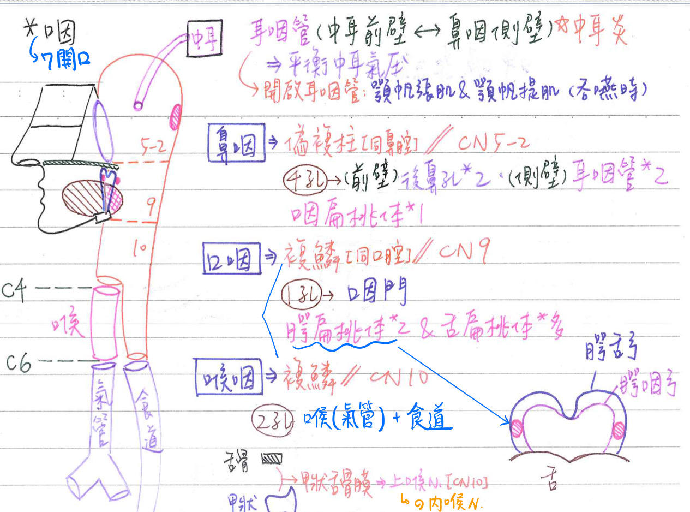
喉(larynx)
💡
C6：
1. 喉/氣管交界
2. 咽/食道交界
- 位置：C4~C6
喉壁：由9塊軟骨(cartilage)構成
- 成對：
- 杓狀(arytenoid)軟骨(=披裂軟骨)：下接環狀軟骨，前附聲帶
- 小角(corniculate)軟骨：附於杓狀軟骨上端
- 楔形(cuneiform)軟骨：位於杓狀軟骨&會厭軟骨間皺折內(看不太到)
- 單一：
- 甲狀(thyroid)軟骨：最大，前中線突出稱喉結(laryngeal prominence)=亞當氏蘋果(Adam's apple)
- 會厭(epiglottis)軟骨(=上蓋軟骨)：下接甲狀軟骨，上端游離
→吞嚥時上蓋呼吸道→以防吸入性肺炎 - ★環狀(cricoid)軟骨(=戒環軟骨)：最下方(★位於C6)，下接氣管
- [重要]喉軟骨具2關節：
- [環甲]環狀軟骨-甲狀軟骨(cricothyroid j.)：向前、向下移動→拉長聲带
- [環杓]環狀軟骨-杓狀軟骨(cricoarytenoid)：內旋、外旋→内收、外展聲带
- 楔形軟骨：沒有與其他喉軟骨相接
- 會厭、楔形、小角、杓狀(頂端)為彈性軟骨；其他為透明軟骨(杓、甲、環)
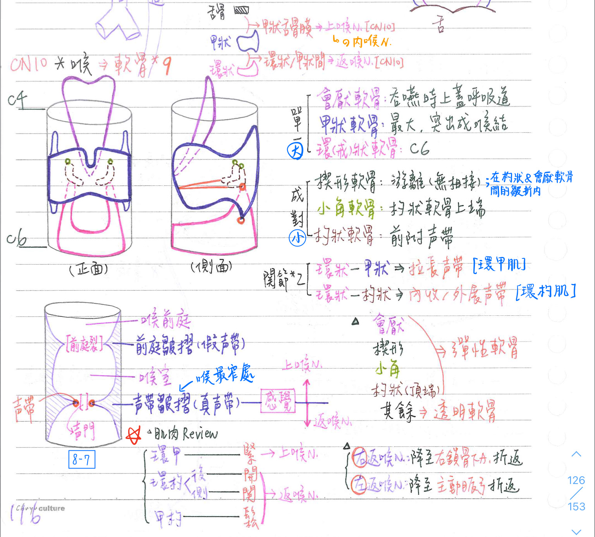
喉黏膜：具二水平皺褶
- 上方：前庭皺褶(vestibular fold)=假聲帶
- 前庭裂(rima vestibul)：位於兩前庭皺褶之間
- 下方：聲帶皺(vocal fold)=真聲帶
- [重要]聲門(glottis=rima glottis)：位於兩真聲帶之間，為喉最窄處
喉的感覺
- 聲帶皺褶以上：內喉N(上喉N分支)支配
- 聲帶皺褶以下：返喉N支配
- 上喉N、下喉N(=返喉N)皆為迷走N的分枝
- 上喉N：分成內側枝(=內喉N；主司感覺)& 外側枝(=外喉N；主司運動)
- 內喉N：穿越甲狀舌骨膜(thyrohyoid membrane)進入喉部
- 返喉N：途經氣管食道溝，由環狀/甲狀軟骨間進入喉部
- 右返喉N：下降至右鎖骨下A之前方，再向其後上折返
- 左返喉N：下降至主動脈弓(動脈韌帶)之前方，再向其後上折返
- 動脈韌帶：為動脈導管之封閉退化
- 動脈導管持續開放(PDA)患者手術時→易損及左返喉N
- 甲狀腺切除術：最易損及返喉N，次易損及上喉N
喉內部
- 喉前庭(vestibule of larynx)：位於假聲帶之上
- 喉室(intermediate laryngeal cavity)：位於真假聲帶之間
聲帶：表面覆蓋複層鱗狀上皮
- [重要]位於甲狀軟骨&杓狀軟骨之間，二條纖維组織，發聲用
- [重要]喉的內在肌可控制聲帶的運動，包括：除環甲肌是上喉N支配，其餘都是返喉N支配
- 環甲肌(cricothyroid m)：聲帶拉緊(伸長)；外喉N(上喉N分支)支配
- 環杓後肌(post. cricoarytenoid m)：聲門打開(外展)；返喉N支配
- 環杓側肌(lat. cricoarytenoid m)：聲門關閉(内收)；返喉N支配
- 甲杓肌(thyroarytenoid m)：聲帶放鬆(縮短)；返喉N支配
- 橫杓肌(transverse arytenoid m)：聲門關閉(內收)；返喉N支配
- 斜杓肌(oblique arytenoid m)：喉入口括約肌；返喉N支配
- 聲帶肌(vocalis m)：調節聲帶張力；返喉N支配
氣管(trachea)
- 位置：C6〜T4(下緣)
- 氣管隆突(carina)：氣管分岔處
- 約在胸骨角~T4/T5高度
- 為★[107-2]★[109-1]引發咳嗽反射(經由CN10傳至延腦)最敏感的呼吸道黏膜
- 其加寬或變形→可視為局部林巴結病變(EX：肺癌轉移)之表徵
- 管壁：由16~20個C形軟骨(透明軟骨)構成，缺口朝後(食道)
- 氣管平時即撐開；而食道因無軟骨→平常乃關閉
- 大小：成人氣管長度約5英吋(13公分)；直徑約1英吋(2.5公分)
- 氣管平滑肌：出現在C形軟骨缺口處，可藉其收縮調節管徑(不是環繞一圈的環肌)
- 外科性呼吸道(surgical airway)：
- 氣管切開術(tracheostomy)：非緊急→割氣管
- 自氣管之2nd、3rd C形軟骨縱向切開
- 環狀甲狀軟骨膜(環甲膜)切開術(cricothyroidotomy)：緊急→割喉
- 自喉之環狀甲狀軟骨膜(cricothyroid membrane)橫向切開
- 氣管切開術(tracheostomy)：非緊急→割氣管
支氣管樹(bronchial tree)
結構
- 傳導區(conduction zone)：無換氣功能=無效腔=死腔(dead space)
- 初級(primary)支氣管=主(main)支氣管=肺支氣管(左1右1)
- 右主支氣管：粗、短、鉛直(相較左主支氣管而言)
- 吸入性肺炎：常發生於右肺、下葉、上節
- →次級(secondary)支氣管=葉(lobe)支氣管(左2右3)
- →三級(tertiary)支氣管=節(segment)支氣管(左9±1右10)[左8右10]
- →→終末細支氣管(約第16级分枝，terminal bronchole)
- 初級(primary)支氣管=主(main)支氣管=肺支氣管(左1右1)
- 呼吸區(respiratory zone)：具換氣功能=有效腔；★具肺泡(alveolus)
- 呼吸性細支氣管(respiatory bronchiole)：肺結構最小的功能單位
- →肺泡管(alveolar duct)
- →肺泡囊(約第23級分枝, alvolar sac)
- 支氣管擴張(bronchiectasis)：終末細支氣管近端管壁破壞併擴張
- 肺氣腫(emphysema)：終末細支氣管遠端~肺泡 管壁破壞併擴張
肺泡(alveolus)
- 約3億個，表面積共約70平方公尺(約20坪)
- 第一型肺泡上皮細胞(type 1 pneumocyte)=扁平(鳞狀)細胞：
- 較小，★[109-1]較多(97%)
- 具胞橋小體&緊密結合
⇒★[109-1]與內皮細胞（ endothelial cell）組成氣血屏障 air-blood barrier
- 第二型肺泡上皮細胞(type 2 pneumocyte)=中膈(septal)細胞=立方细胞：
- 較大，較少(3%)，多見於肺泡間交接處
- 具★[109-1]層狀體(lamellar body)：分泌表面張力素(surfactant)
- [重要]表面張力素(surfactant)：由第二型肺泡上皮細胞分泌
- 胚胎20~24週(終囊期)開始分泌
- 化學成份：磷脂質90%、蛋白質8%、糖類2%
- 主含卵磷脂(dipalmitoyl lecithn)：L/S>2；當L/S<1.2→易呼吸窘迫
- 功能：
- 降低肺泡的表面張力(向內縮的力)，使肺泡易膨脹；並防止肺泡塌陷
→增加肺泡的順應性，以減少呼吸所做的功 - 抽煙者：表面張力素的分泌量減少
- 降低肺泡的表面張力(向內縮的力)，使肺泡易膨脹；並防止肺泡塌陷
- 肺泡巨噬細胞(alveolus macrophage)=塵細胞(dust cell)，分佈於：
- 肺泡空腔中：清除吸入塵粉、RBC、結核桿菌(Mb)等
- 肺泡間膈結締組織中
- 肺泡巨噬細胞遭結核桿菌(Mb)感染後→可經TNF等導致細胞凋亡；
亦可經IL-10等→反而促進結核桿菌在細胞內繁殖。
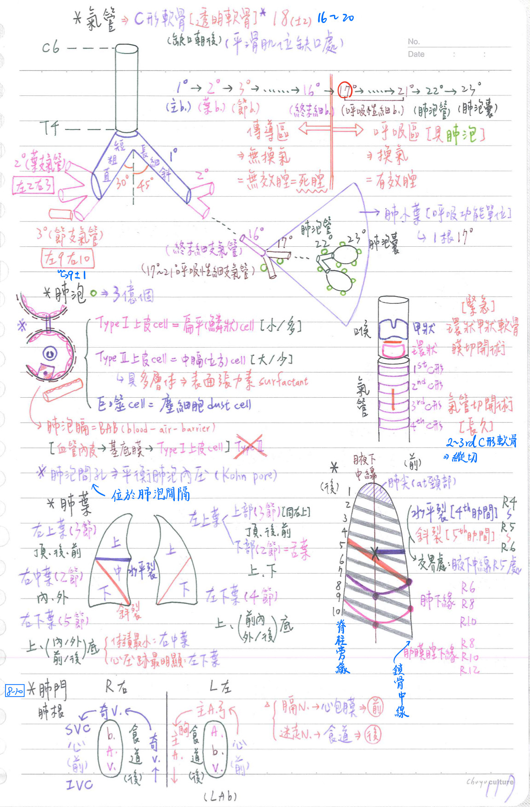
肺泡膈(alveolar sepm)：血液-空氣屏障(blood-air-barrier, BAB)
- 連續型血管內皮細胞
- 基底膜
- 第一型肺泡上皮(第二型肺泡上皮並無參與BAB)
肺泡間孔(alveolar pore=Kohn pore):
- 位於肺泡間膈(inter-alveolar septum)
- 平衡肺泡內壓，互通肺泡內氣流
[重要]肺小葉(lobule)
- 呼吸性細支氣管&其以下之空氣通道
- 為呼吸系統的功能單位(respiratory bronchiolar unit)💡
[功能單位]
肺：肺小葉
腎：腎元
肝：肝小葉(acinar lobule)
神經系統：neuron
肺(lung)：肋膜包裹著支氣管樹
肺葉(lobe；左2右3)、肺節(segment)
- 右肺：三葉(以水平裂分成右上、右中葉；以斜裂分成右中、右下葉)
- 右肺底較左肺高(因肝位於右側)，其中以右中葉體積最小
- 右上葉(RUL)：3節 →頂(apical)、後(posterior)、前(anterior)
- 右中葉(RML)：2節 →內(medial)、外(lateral)
- 右下葉(RLL)：5節→上(superior)、內底(medial basal)、前底(anterior basal)、外底(lateral basal)、後底(posterior basal)
- 左肺：二葉(以斜裂分左上、左下葉)
- 左下葉心壓跡最明顯
- 左上葉(LUL)：3+2
- 上部(sup. division)=右上葉(RUL)：3節
→頂(apical)、後(posterior)、前(anterior) - 下部(inf. division)=舌葉(lingula)=右中葉(RML)：2節
→上(superior)、下(inferior)
- 上部(sup. division)=右上葉(RUL)：3節
- 左下葉(LLL)：4節
→上(superior)、前內底(anteromedial basal、外底(laterl basal)、後底(posterior basal)
- 斜裂(oblique fissure)：約位於第5肋間(R5~R6)
- 水平裂(horizontal fissure)：位於★[110-1]★[110-2]前胸壁第4肋間(R4~R5)
- 水平裂與斜裂交會於：腋下中線R5處
肺尖與肺底
- 肺尖(apex)：位於第一肋骨之上(約2.5cm)(即頸部)
- 肺底(base)：位於橫膈
★肺下緣：in midinspiration(吸氣吸一半的時候) [6, 8, 10]
- 於鎖骨中線(midclavicular)：約R6高度
- 於腋下中線(midaxillary line)：約R8高度
- 於肩胛線(scapular line；肩胛骨內緣鉛直線)：約R9高度
- 於脊柱旁緣(paravertebral line)：約R10/T10高度
- 細針胸腔/肋膜穿刺術(needle thorcentsis)：適用於張力性氣胸
→第二肋間(R2~R3)，鎖骨中線 - 胸管引流術(chest tube thorcocensis)：適用於氣胸、血胸、膿胸
→第五肋間(R5~R6)，前腋下線；或第九肋間，腋下中線- 宜於吐氣時，沿肋骨上緣進針，以避開位於肋骨下緣之靜脈、動脈、神經
★[108-1]肋膜腔下緣：in midinspiration(吸氣吸一半的時候) [8, 10, 12]
- 於鎖骨中線(midclavicular line)：約R8高度
- 於腋下中線(midaxillary line)：約R10高度
- 於肩胛線(scapular line)：約R11高度
- 於脊柱旁緣(paravertebral line)：約R12/T12高度
★[110-2]肺根與肺門
- 肺根(root)：含主支氣管、肺A/V、支氣管A/V、神經、淋巴管等，由肋膜圍成一束
- [重要]膈N由肺根之前面通過；迷走N、奇V、胸管由肺根之後面通過
- [考壓跡&溝]肺門(hilum)：肺之內側面裂縫；肺根通過處
- 左肺門：
- [前]：心壓跡
- [後]：胸主動脈溝、食道溝
- [上]：主動脈弓壓跡、左鎖骨動脈溝、左頭臂靜脈溝
- 右肺門：
- [前]上腔靜脈溝、心壓跡、下腔靜脈溝
- [後]食道溝、★[109-2]奇靜脈溝
- [上]右鎖骨下動脈溝、右頭臂靜脈溝、奇靜脈溝
- 構造排列：
- 左肺門：肺A(上方)→支氣管(中間)→肺V(下方) [ABV]
- 右肺門：支氣管(上方)→肺A(中間)→肺V(下方) [BAV]
- 左肺門：
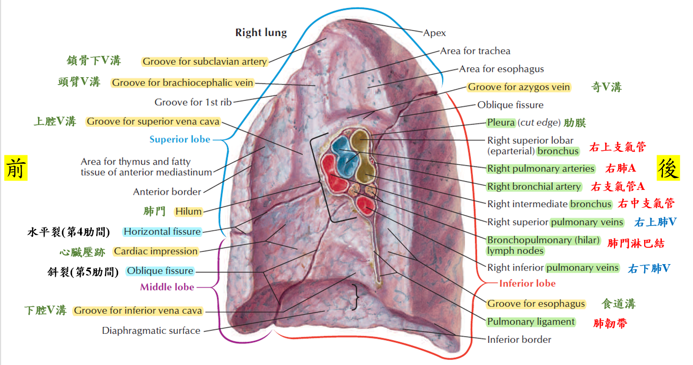
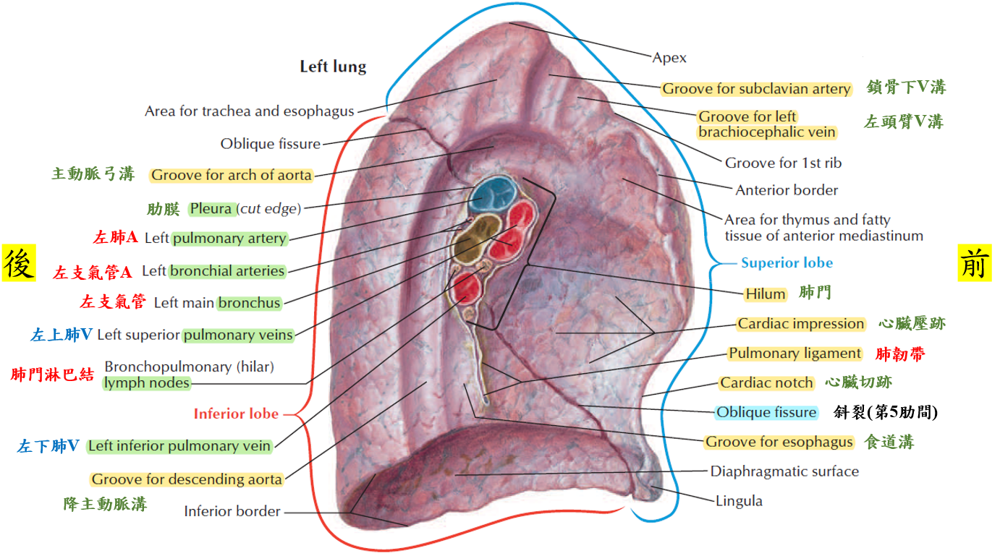
肺-血管：雙套供給(dual supply)
- 肺動脈系統：氣體交換
- 肺A(缺氧血，源自右心室)→微血管→肺V(充氧血，注入左心房)
- 支氣管動脈系統：營養肺臓
- 支氣管A(充氧血，源自胸主A)；支氣管V(缺氧血，注入奇靜脈系統)
- 例外：肺小葉→由肺動脈系統供給
- 原因：支氣管A於呼吸性支氣管處與肺A吻合→肺小葉僅由肺動脈系統供給
- 肺小葉中央(central)：具呼吸道、肺A之分枝
- 肺小葉兩旁(septum)：具淋巴管、肺V之分枝
肺-神經
- 副交感神經：分泌Ach
→支氣管平滑肌收縮、肺血管平滑肌舒張、痰分泌增加(血流多→分泌物變多)- ★[109-1]迷走神經背核(節前)→肺神經節組胞(節後)
- 交感神經：分泌norepinephrine(NE)
→支氣管擴張(β2)、肺血管收缩(α1)，痰分泌減少- T2~T4中間側角細胞(節前)→T2~T4神經節細胞(節後)
- 肺神經叢(pulmonary plexus)：含交感 & 副交感神經纖維
- 所有肺之感覺神經纖維：皆途經迷走N
肺-淋巴引流
- N1=肺淋巴結(pulmonary LN)：
- 支氣管周圍淋巴結(peribronchial LN)：segmental、lobar、inter-lobar
- 肺門淋巴結(hilar LN)：bronchopulmonaryl
- N2=縱膈腔林巴結(mediastinal LN)：
- 縱膈腔淋巴結(mediastinal LN)：posterior、anterior
- 氣管支氣管淋巴結(tracheobronchial LN)：subcarinal
- 氣管旁淋巴結(paratracheal LN)
- 淋巴引流路徑：N1→N2→(左右)支氣管縱膈腔淋巴幹(broncomediastinl trunk)
→胸管(左) or 右淋巴管(右)
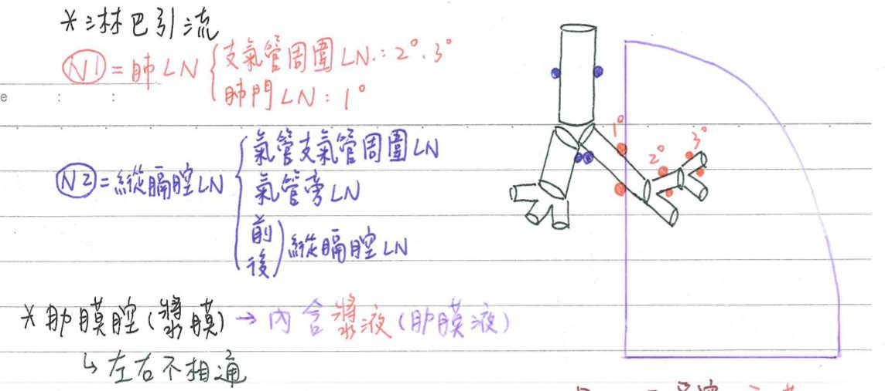
呼吸系統-相關結構
肋膜(pleura)：屬於漿膜(serous membrane)
臓層肋膜(內層, visceral layer)
- 緊貼肺臓；由支氣管A、自主神經支配
- 臟層肋膜之淋巴引流：經肺臓，至肺淋巴結、縱膈腔淋巴結等
壁層肋膜(外層, parietal layer)
- 緊貼胸壁、橫膈、縱膈；由肋間A支配
- 肋骨性肋膜(costal)：緊貼胸壁；由★[110-2]肋間N支配
- 横膈性肋膜(diaphragmatic)：緊貼橫隔；周圍由肋間N、中央由★★[108-1]膈N支配
- 縱膈性肋膜(mediastinal)：緊貼縱膈；由★[108-1]膈N支配
- 壁層肋膜之淋巴引流：沿胸壁肋間，至内乳(=胸骨旁)淋巴結、腋下淋巴結等
- ★肺韌帶(pulmonary ligament)：為縱膈性壁層肋膜位於肺根(root)下方之反折
→有助於固定肺臓
肋膜腔(pleural cavity)：臟層肋膜&壁層肋膜之間的空腔
- 內含肋膜液(漿液)，以減少磨擦
- 通過胸廓上⽅★[110-1]向上延伸到頸部
- ★[110-1]左、右肋膜腔彼此互不相通
- 肋膜隱窩(pleural recesses)：壁層肋膜之間(位於肺外側底的尖端)
- 肋骨橫膈隱窩(costodiaphragmatic recess)：
- 介於側胸壁(肋骨性肋膜)&橫膈下降部(橫膈性肋膜)之間
- 為肋膜積水(pleural effusion)聚積處
- 肋骨縱膈隱窩(costomediastinal recess)：
- 介於前胸壁(肋骨性肋膜)&前縱膈(縱膈性肋膜)之間
- 左側較右側明顯
- 為呼吸時，左肺舌小葉滑進滑出處
- 肋骨橫膈隱窩(costodiaphragmatic recess)：
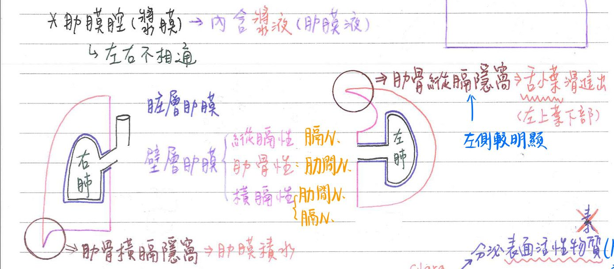
呼吸道之組織學
| [空白就是沒有] | 鼻→咽→喉→ 氣管→支氣管 | 終末細支氣管 | 呼吸性細支氣管 | 肺泡 |
|---|---|---|---|---|
| 內襯上皮 | 偽複層柱狀 | 單層柱狀(細支氣管) →立方 | 單層立方 | 單層扁平 |
| 纖毛 | + | [遠端]4不1具有 [近端] (相反) | ||
| 杯細胞 | + | ★+⇒ - | ||
| 軟骨 | + | +⇒ - (於細支氣管消失) | ||
| 黏液腺體 | + | +⇒ - | ||
| 平滑肌(可收縮) | + | ++(最多) | + | |
| 彈性纖維(彈性) | + | ++(最多) | + | + |
| 網狀纖維(支撐) | ++(最多) | |||
| Clara cells | + | + |
- 內襯上皮： 離體表越遠→越扁
- 終末細枝氣管之近端：具纖毛、杯細胞、軟骨、黏液腺體,
- 終末細枝氣管之遠端[4不1具有]：無纖毛、杯細胞、軟骨、黏液腺體；有肺泡
備註
趙俊彥沒寫有包含肺泡，但奕翔圖譜有(待查)
- 杯細胞(goblet cell)：★[110-1]單細胞腺體，分泌黏液💡
杯細胞(正常情形下)只存在於：呼吸道、小腸、大腸
- 黏液腺體(如支氣管腺)：多細胞腺體，分泌黏液
- 杯細胞(goblet cell)：★[110-1]單細胞腺體，分泌黏液
- 呼吸道之內襯上皮：主為偽複層柱狀上皮
- 5特例：鼻前庭區、口咽、喉咽、聲帶皺折、會厭軟骨上表面：為複層鱗狀上皮
- 慢性發炎、支氣管擴張：可使偽複層柱狀上皮→化生為複層鱗狀上皮
- 註：空格代表”沒有”(不是忘了填)
- 呼吸道之軟骨：
- 彈性軟骨：會厭軟骨、[楔形軟骨、小角軟骨、杓狀軟骨(頂端)]
- 透明軟骨：其餘呼吸道軟骨
- 呼吸道無纖維軟骨
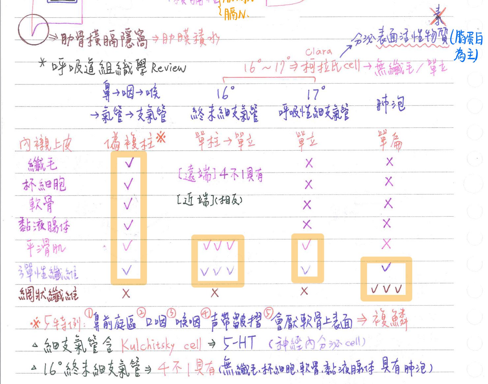
- 柯拉氏細胞(Clara cell)：
- 無纖毛(non-ciliated)之單層立方細胞
- 位置：終末細支氣管&呼吸性細支氣管[Clara cell越末端越多；纖毛細胞越末端越少]
- 分泌表面活性物質(surface-active agent)：<cf>表面張力素(卵磷脂為主)
- 成份為脂蛋白(lipoprotein)
- 防止細呼吸道之黏膜相互黏貼(尤其呼氣時)
- 神經內分泌細胞(neuroendocrine cell)
- 別名：APUD (amine precursor uptake & decarboxylation)
= DNES(diffuse neuroendocrine system)
=嗜銀細胞(argentaffin cell =argyrophil cell)
b.位於細支氣管(Kulchitsky cell)：分泌5-HT
- 別名：APUD (amine precursor uptake & decarboxylation)